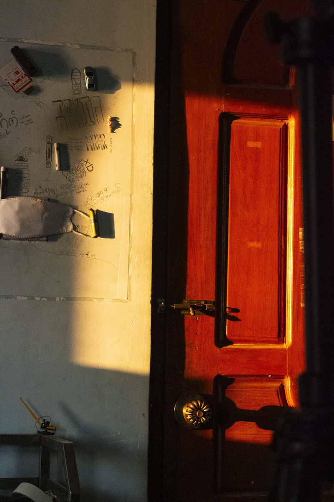
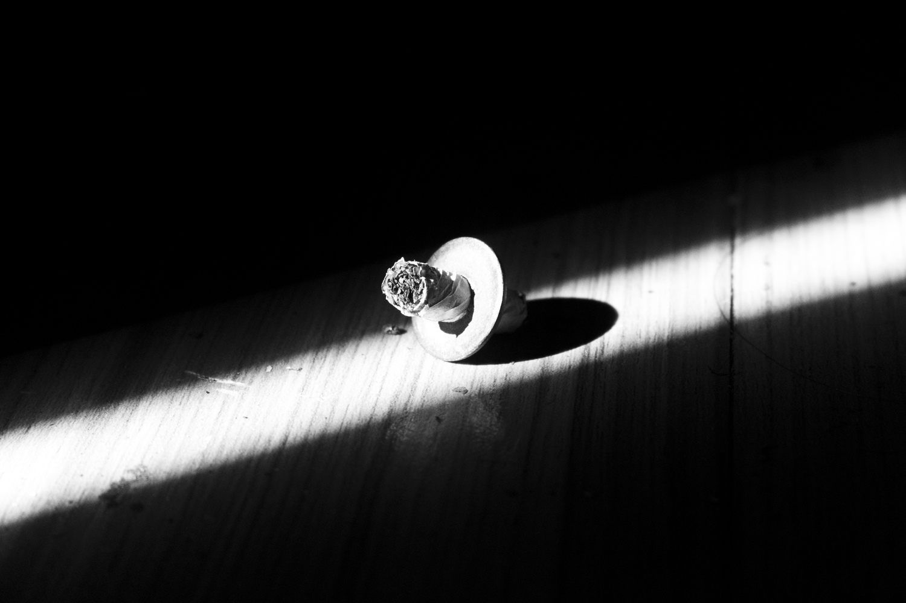

Chapter 01 — Origin
Excited for the adventure it brings.
Sunlight shines through the jungle,
showing the humid air.
As an explorer, he wants to discover new things.
But he thinks —
can he really explore if he keeps questioning himself?
1997 — Irrawaddy River, Myanmar
Born near the Irrawaddy.
Raised in Yangon.
Preferred playing on streets
over sitting in classrooms.
He joined Yangon University in 2015, not for Geography — but because university gave him trails to hike, mountains to climb, and streets to wander. He would travel 40 towns and summit 23 mountains before anyone called him a photographer.
Chapter 02 — The First Frame
"A camera arrived as a gift.
He didn't know it was also
a way to ask questions
he couldn't speak aloud."
2017. A DSLR. The streets of Yangon. He pointed it at workers, at monks, at shadows on walls, at cigarette butts in beams of light — at everything the world was ignoring. He wasn't documenting the city. He was documenting his own attempt to understand it.
Chapter 03 — Light
A shaft cutting a cigarette in two. A warm door burning gold in the cold night. Leaf shadows drawing themselves on a white wall. pphn finds the moment light becomes a confession — something the world didn't mean to reveal.
"Shadow is not absence.
Shadow is the photograph."

Warm against Cold · Yangon
Shaft · Shadow · StillnessChapter 04 — The Work
Chapter 05 — The Truth
— pphn, Yangon
You've seen the beginning.
Explore the full portfolio, projects, shop, and the ongoing work of a documentary photographer from Myanmar who never stopped moving forward.
"ကြိုဆိုပါတယ် ၂၀၇၉"
© 2026 pphn — Pyae Phyo Htet Naing